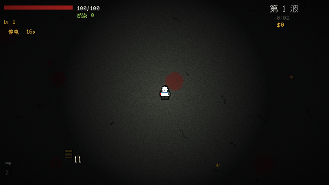
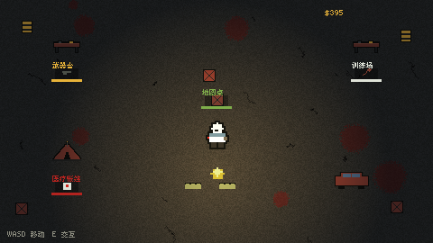

PLAYABLE PROJECT / DESIGN NOTES
尸潮ZOMBIE TIDE
在无限尸潮中，带着三人小队活下来。
肉鸽生存 · 电脑键盘 · 首次约 45 MB

游戏实机画面
- 类型
- 肉鸽生存 / 波次战斗
- 引擎
- Godot 网页导出
- 视觉
- 480 × 270 像素风格
- 制作方式
- DeepSeek 辅助制作
01 / CORE LOOP
一次出征，两层成长。
《尸潮》是一款以三人小队为单位的肉鸽生存游戏。队伍自动索敌开火，玩家的注意力集中在走位、升级选择和终极技能时机。单局由持续推进的波次组成，失败后回到营地，再用带回的资源准备下一次出征。
营地准备→小队出征→战斗与升级→Boss / 特殊事件→回营成长
02 / DESIGN FOCUS
让风险成为战斗的一部分。
01 · 感染的两面性
全队共享感染条。感染增加带来更高伤害，同时提高生存压力；达到上限会触发一段尸变状态。攻击收益与生存代价被放在同一条指标上。
02 · 小队与走位
队长与两名队员独立索敌，队员倒下后会恢复。自动射击把操作重心从反复瞄准转向空间判断、敌群规避与技能时机。
03 · 节奏与重开
每 5 波出现 Boss，每 10 波出现事件。停电收窄视野，血月与尸潮带来不同压力；回营后的设施成长，让失败连接下一次尝试。
03 / IN-GAME CAPTURES
战场之外，仍有选择。


04 / PLAY THE BUILD
进入尸潮。
建议使用电脑与键盘。首次载入约 45 MB，点击后才下载游戏；需要支持 WebAssembly 与 WebGL 的浏览器。
点击游戏画面后使用键盘操作
WASD 移动 空格 终极技能 123 选择升级 M 静音 Esc 暂停
独立窗口试玩 ↗05 / PRODUCTION NOTES
制作与验证说明。
个人作品，使用 DeepSeek 辅助完成游戏实现，Godot 导出为网页版。原展示页说明：视觉素材与音效由程序化生成，使用缝合像素字体（SIL OFL 1.1）。本页基于现有游戏展示与可玩版本整理。
本次接入检查网页版加载、资源引用与作品集导航。后续试玩可重点观察感染反馈是否易懂、首轮回营是否清晰，以及特殊事件是否产生不同走位策略。